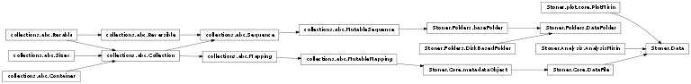
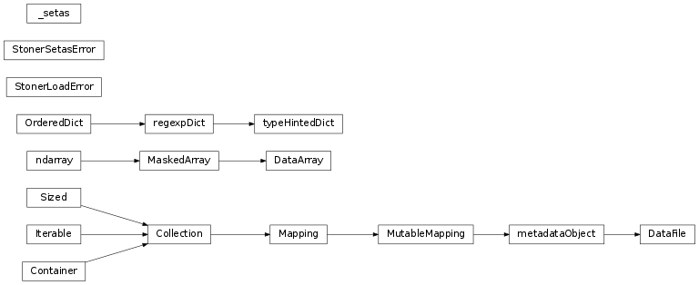
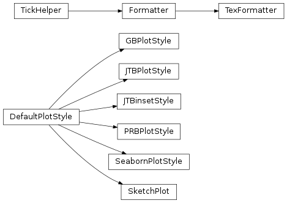
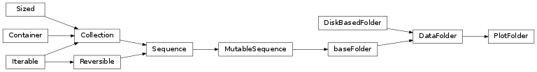
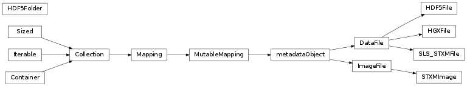
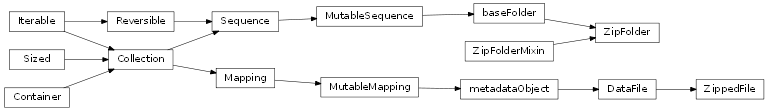
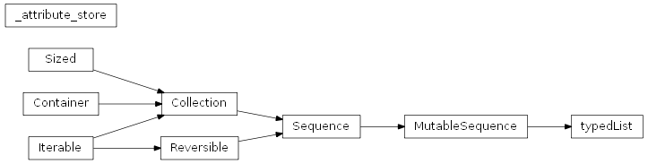
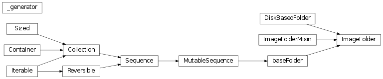
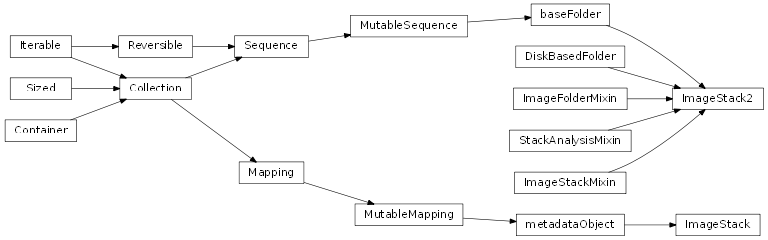
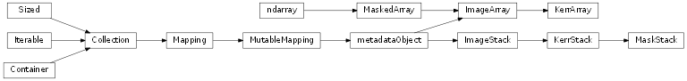

Stoner Package¶
Data(*args, **kargs) |
A merged class of Stoner.Core.DataFile, Stoner.Analysis.AnalysisMixin and Stoner.plot.PlotMixin |
DataFolder(*args, **kargs) |
Provide an interface to manipulating lots of data files stored within a directory structure on disc. |
Class Inheritance Diagram¶
Stoner.Core Module¶
Stoner.Core provides the core classes for the Stoner package.
Classes¶
StonerLoadError |
An exception thrown by the file loading routines in the Stoner Package. |
StonerSetasError |
An exception tjrown when we try to access a column in data without setas being set. |
_setas([initial_val]) |
A Class that provides a mechanism for managing the column assignments in a DataFile like object. |
regexpDict |
An ordered dictionary that permits looks up by regular expression. |
typeHintedDict(*args, **kargs) |
Extends a blist.sorteddict to include type hints of what each key contains. |
metadataObject(*args, **kargs) |
Provides a base class representing some sort of object that has metadata stored in a Stoner.Core.typeHintedDict object. |
DataArray |
A sub class of numpy.ma.MaskedArray with a copy of the setas attribute to allow indexing by name. |
DataFile(*args, **kargs) |
Stoner.Core.DataFile is the base class object that represents a matrix of data, associated metadata and column headers. |
Class Inheritance Diagram¶
Stoner.Analysis Module¶
Stoner .Analysis provides a subclass of Data that has extra analysis routines builtin.
Functions¶
GetAffineTransform(p, pd) |
Calculate an affine transofrm from 2 sets of three points. |
ApplyAffineTransform(xy, transform) |
Apply a given afffine transform to a set of xy data points. |
Classes¶
AnalysisMixin(*args, **kargs) |
A mixin calss designed to work with Stoner.Core.DataFile to provide additional analysis methods. |
Stoner.plot Package¶
Stoner.plot sub-package - contains classes and functions for visuallising data.
Most of the plotting functionailty is provided by the PlotMixin mixin class which is available through the Data classs.
The formats module provides a set of template classes for producing different plot styles and formats. The :mod:#util# module provides
some handy utility functions.
Functions¶
hsl2rgb(h, s, l) |
Converts from hsl colourspace to rgb colour space with numpy arrays for speed. |
PlotFile(*args, **kargs) |
Issue a warning and then create a class anyway. |
Classes¶
PlotMixin(*args, **kargs) |
A mixin class that works with Stoner.Core.DataFile to add additional plotting functionality. |
Stoner.plot.formats Module¶
Plot Templates module - contains classes that style plots produced by Data
Classes¶
TexFormatter |
An axis tick label formatter that emits Tex formula mode code. |
DefaultPlotStyle(**kargs) |
Produces a default plot style. |
GBPlotStyle(**kargs) |
Template developed for Gavin’s plotting. |
JTBPlotStyle(**kargs) |
Template class for Joe’s Plot settings. |
JTBinsetStyle(**kargs) |
Template class for Joe’s Plot settings. |
PRBPlotStyle(**kargs) |
A figure Style for making figures for Phys Rev * Jounrals. |
SketchPlot(**kargs) |
Turn on xkcd plot style. |
SeabornPlotStyle(**kargs) |
A plotdtyle that makes use of the seaborn plotting package to make visually attractive plots. |
Class Inheritance Diagram¶
Stoner.plot.utils Module¶
Stoner.Folders Module¶
Stoner.Folders : Classes for working collections of Data files.
The core classes provides a means to access them as an ordered collection or as a mapping.
Classes¶
baseFolder(*args, **kargs) |
A base class for objectFolders that supports both a sequence of objects and a mapping of instances of itself. |
DiskBasedFolder(*args, **kargs) |
A Mixin class that implmenets reading metadataObjects from disc. |
DataFolder(*args, **kargs) |
Provide an interface to manipulating lots of data files stored within a directory structure on disc. |
PlotFolder(*args, **kargs) |
A subclass of objectFolder with extra methods for plotting lots of files. |
Class Inheritance Diagram¶
FileFormats Module¶
Generic Fomats¶
CSVFile(*args, **kargs) |
A subclass of DataFiule for loading generic deliminated text fiules without metadata. |
SPCFile(*args, **kargs) |
Extends _SC_.DataFile to load SPC files from Raman |
TDMSFile(*args, **kargs) |
A first stab at writing a file that will import TDMS files |
OVFFile(*args, **kargs) |
A class that reads OOMMF vector format files and constructs x,y,z,u,v,w data. |
EasyPlotFile(*args, **kargs) |
A class that will extract as much as it can from an EasyPlot save File. |
Instrument Formats¶
BigBlueFile(*args, **kargs) |
Extends CSVFile to load files from Nick Porter’s old BigBlue code |
FmokeFile(*args, **kargs) |
Extends _SC_.DataFile to open Fmoke Files |
QDFile(*args, **kargs) |
Extends _SC_.DataFile to load files from Quantum Design Systems - including PPMS, MPMS and SQUID-VSM |
RigakuFile(*args, **kargs) |
Loads a .ras file as produced by Rigaku X-ray diffractormeters |
VSMFile(*args, **kargs) |
Extends _SC_.DataFile to open VSM Files |
MokeFile(*args, **kargs) |
Class that extgends _SC_.DataFile to load files from the Leeds MOKE system. |
XRDFile(*args, **kargs) |
Loads Files from a Brucker D8 Discovery X-Ray Diffractometer |
LSTemperatureFile(*args, **kargs) |
A class that reads and writes Lakeshore Temperature Calibration Curves. |
Facility Outputs¶
BNLFile(*params) |
Creates BNLFile a subclass of _SC_.DataFile that caters for files in the SPEC format given by BNL (specifically u4b beamline but hopefully generalisable). |
MDAASCIIFile(*args, **kargs) |
Reads files generated from the APS. |
OpenGDAFile(*args, **kargs) |
Extends _SC_.DataFile to load files from RASOR |
RasorFile(*args, **kargs) |
Just an alias for OpenGDAFile |
SNSFile(*args, **kargs) |
Reads the ASCII exported Poalrised Neutron Rfeflectivity reduced files from BL-4A line at the Spallation Neutron Source at Oak Ridge National Lab. |
Stoner.Fit Module¶
Stoner.Fit: Functions and lmfit.Models for fitting data.
Functions should accept an array of x values and a number of parmeters, they should then return an array of y values the same size as the x array.
Models are subclasses of lmfit.Model that represent the corresponding function
Please do keep documentation up to date, see other functions for documentation examples.
All the functions here defined for scipy.optimize.curve_fit to call themm i.e. the parameters are expanded to separate arguements.
Functions¶
_strijkers_core |
strijkers Model for point-contact Andreev Reflection Spectroscopy |
arrhenius(x, A, DE) |
Arrhenius Equation without T dependendent prefactor. |
bdr(V, A, phi, dphi, d, mass) |
BDR model tunnelling. |
blochGrueneisen(T, thetaD, rho0, A, n) |
BlochGrueneiseen Function for fitting R(T). |
cfg_data_from_ini(inifile[, filename]) |
Read an inifile and load and configure a DataFile from it. |
cfg_model_from_ini(inifile[, model, data]) |
Utility function to configure an lmfit Model from an inifile. |
fluchsSondheimer(t, l, p, sigma_0) |
Evaluate a Fluchs-Sondheumer model function for conductivity. |
fmr_power(H, H_res, Delta_H, K_1, K_2) |
A combination of a Lorentzian and differential Lorenztion peak as measured in an FMR experiment. |
fowlerNordheim(V, A, phi, d) |
Fowler Nordhiem Model of electron tunnelling. |
inverse_kittel(f, g, M_s, H_k) |
Rewritten Kittel equation for finding ferromagnetic resonsance in field with frequency |
kittelEquation(H, g, M_s, H_k) |
Kittel Equation for finding ferromagnetic resonance peak in frequency with field. |
langevin(H, M_s, m, T) |
“The Langevin function for paramagnetic M-H loops/ |
linear(x, intercept, slope) |
Simple linear function |
lorentzian_diff(x, A, sigma, mu) |
Implement a differential form of a Lorentzian peak. |
modArrhenius(x, A, DE, n) |
Arrhenius Equation with a variable T power dependent prefactor. |
nDimArrhenius(x, A, DE, n) |
Arrhenius Equation without T dependendent prefactor for various dimensions. |
powerLaw(x, A, k) |
Power Law Fitting Equation. |
quadratic(x, a, b, c) |
A Simple quadratic fitting function. |
simmons(V, A, phi, d) |
Simmons model of electron tunnelling. |
stretchedExp(x, A, beta, x_0) |
A stretched exponential fuinction. |
strijkers(V, omega, delta, P, Z) |
strijkers Model for point-contact Andreev Reflection Spectroscopy. |
vftEquation(x, A, DE, x_0) |
Vogel-Flucher-Tammann (VFT) Equation without T dependendent prefactor. |
wlfit(B, s0, DS, B1, B2) |
Weak localisation |
Classes¶
Arrhenius(*args, **kwargs) |
Arrhenius Equation without T dependendent prefactor. |
BDR(*args, **kwargs) |
BDR model tunnelling. |
BlochGrueneisen(*args, **kwargs) |
BlochGrueneiseen Function for fitting R(T). |
FMR_Power(*args, **kwargs) |
A combination of a Lorentzian and differential Lorenztion peak as measured in an FMR experiment. |
FluchsSondheimer(*args, **kwargs) |
Evaluate a Fluchs-Sondheumer model function for conductivity. |
FowlerNordheim(*args, **kwargs) |
Fowler Nordhiem Model of electron tunnelling. |
Inverse_Kittel(*args, **kwargs) |
Kittel Equation for finding ferromagnetic resonance peak in frequency with field. |
KittelEquation(*args, **kwargs) |
Kittel Equation for finding ferromagnetic resonance peak in frequency with field. |
Langevin(*args, **kwargs) |
“The Langevin function for paramagnetic M-H loops/ |
Linear([independent_vars, prefix, missing, name]) |
Simple linear fit |
Lorentzian_diff(*args, **kwargs) |
lmfit Model rerprenting the differential form of a Lorentzian Peak. |
ModArrhenius(*args, **kwargs) |
Arrhenius Equation with a variable T power dependent prefactor. |
NDimArrhenius(*args, **kwargs) |
Arrhenius Equation without T dependendent prefactor for various dimensions. |
PowerLaw([independent_vars, prefix, …]) |
Power Law Fitting Equation. |
Quadratic([independent_vars, prefix, …]) |
A Simple quadratic fitting function. |
Simmons(*args, **kwargs) |
Simmons model of electron tunnelling. |
StretchedExp(*args, **kwargs) |
A stretched exponential fuinction. |
Strijkers(*args, **kwargs) |
strijkers Model for point-contact Andreev Reflection Spectroscopy. |
TersoffHammann(*args, **kwargs) |
TersoffHamman model for tunnelling through STM tip. |
VFTEquation(*args, **kwargs) |
Vogel-Flucher-Tammann (VFT) Equation without T dependendent prefactor. |
WLfit(*args, **kwargs) |
Weak localisation |
The following modules offer specialised file and foler formats.
Stoner.HDF5 Module¶
Classes¶
HDF5File(*args, **kargs) |
A sub class of DataFile that sores itself in a HDF5File or group. |
HDF5Folder(*args, **kargs) |
A mixin class for Stoner.Folders.DataFolder that provides a method to load and save data from a single HDF5 file with groups. |
HGXFile(*args, **kargs) |
A subclass of DataFile for reading GenX HDF Files. |
SLS_STXMFile(*args, **kargs) |
Load images from the Swiss Light Source Pollux beamline |
STXMImage(*args, **kargs) |
An instance of KerrArray that will load itself from a Swiss Light Source STXM image |
Class Inheritance Diagram¶
Stoner.Zip Module¶
Functions¶
test_is_zip(filename[, member]) |
Recursively searches for a zipfile in the tree. |
Classes¶
ZippedFile(*args, **kargs) |
A sub class of DataFile that sores itself in a zip file. |
ZipFolderMixin(*args, **kargs) |
A sub class of Stoner.Folders.DataFolder that provides a method to load and save data from a single Zip file. |
ZipFolder(*args, **kargs) |
A sub class of DataFile that sores itself in a zip file. |
Class Inheritance Diagram¶
Stoner.Util Module¶
Functions¶
split_up_down(data[, col, folder]) |
Splits the DataFile data into several files where the column col is either rising or falling |
ordinal(value) |
Format an integer into an ordinal string. |
hysteresis_correct(data, **kargs) |
Peform corrections to a hysteresis loop. |
Stoner.tools Module¶
Support functions for Stoner package.
These functions depend only on Stoner.compat which is used to ensure a consistent namespace between python 2.7 and 3.x.
Functions¶
all_size(iterator[, size]) |
Check whether each element of iterator is the same length/shape. |
all_type(iterator, typ) |
Determines if an interable omnly contains a common type. |
fix_signature(proxy_func, wrapped_func) |
Tries to update proxy_func to have a signature that matches the wrapped func. |
format_error(value[, error]) |
Handles the printing out of the answer with the uncertaintly to 1sf and the value to no more sf’s than the uncertainty. |
format_val(value, **kargs) |
Format a number as an SI quantity |
html_escape(s[, quote]) |
Deprecated API. |
isAnyNone(*args) |
Intelligently check whether any of the inputs are None. |
isNone(iterator) |
Returns True if input is None or an empty iterator, or an iterator of None. |
isiterable(value) |
Chack to see if a value is iterable. |
islike_list(value) |
Returns True if value is an iterable but not a string. |
isproperty(obj, name) |
Check whether an attribute of an object or class is a property. |
istuple(obj, *args, **kargs) |
Determine if obj is a tuple of a certain signature. |
quantize(number, quantum) |
Round a number to the nearest multiple of a quantum. |
tex_escape(text) |
Escapes spacecial text charcters in a string. |
get_option(name) |
Return the option value |
set_option(name, value) |
Set a global package option. |
Classes¶
_attribute_store(*args, **kargs) |
A dictionary=like class that provides attributes that work like indices. |
typedList(*args, **kargs) |
Subclass list to make setitem enforce strict typing of members of the list. |
Class Inheritance Diagram¶
Subpackages¶
Stoner.Image Package¶
The Stoner.Image package provides a means to carry out image processing functions in a smilar way that Stoner.Core and Stoner.Data and
Stoner.DataFolder do. The Stomner.Image.core module contains the key classes for achieving this.
Classes¶
ImageArray(*args, **kwargs) |
Stoner.Image.ImageArray is a numpy array like class with a metadata parameter and pass through to skimage methods. |
ImageFile(*args, **kargs) |
An Image file type that is analagous to DataFile. |
ImageFolder(*args, **kargs) |
Folder object for images. |
ImageStack(*args, **kargs) |
Stoner.Image.stack.ImageStack is a 3d numpy array stack of images. |
KerrArray(*args, **kargs) |
A subclass for Kerr microscopy specific image functions. |
KerrStack(*args, **kargs) |
KerrStack is similar to ImageStack but adds some functionality particular to Kerr images. |
MaskStack(*args, **kargs) |
Similar to ImageStack but made for stacks of boolean or binary images |
ImageStack2(*args, **kargs) |
An akternative implementation of an image stack based on baseFolder. |
Class Inheritance Diagram¶

Stoner.Image.folders Module¶
Classes¶
_generator(fldr) |
A helper class to iterator over ImageFolder yet remember it’s own length. |
ImageFolderMixin(*args, **kargs) |
Mixin to provide a folder object for images. |
ImageFolder(*args, **kargs) |
Folder object for images. |
Class Inheritance Diagram¶
Stoner.Image.stack Module¶
Classes¶
ImageStackMixin(*args, **kargs) |
Implement an interface for a baseFolder to store images in a 3D numpy array for faster access. |
ImageStack2(*args, **kargs) |
An akternative implementation of an image stack based on baseFolder. |
ImageStack(*args, **kargs) |
Stoner.Image.stack.ImageStack is a 3d numpy array stack of images. |
Class Inheritance Diagram¶
Stoner.Image.kerr Module¶
Classes¶
KerrArray(*args, **kargs) |
A subclass for Kerr microscopy specific image functions. |
KerrStack(*args, **kargs) |
KerrStack is similar to ImageStack but adds some functionality particular to Kerr images. |
MaskStack(*args, **kargs) |
Similar to ImageStack but made for stacks of boolean or binary images |
Class Inheritance Diagram¶
Stoner.Image.imagefuncs Module¶
Functions¶
adjust_contrast(im[, lims, percent]) |
rescale the intensity of the image. |
align(im, ref[, method]) |
Use one of a variety of algroithms to align two images. |
correct_drift(im, ref[, threshold, …]) |
Align images to correct for image drift. |
subtract_image(im, background[, contrast, clip]) |
subtract a background image from the ImageArray |
fft(im[, shift, phase]) |
Perform a 2d fft of the image and shift the result to get zero frequency in the centre. |
filter_image(im[, sigma]) |
Alias for skimage.filters.gaussian |
gridimage(im[, points, xi, method, …]) |
Use scipy.interpolate.griddata() to shift the image to a regular grid of co-ordinates. |
hist(im, *args, **kargs) |
Pass through to matplotlib.pyplot.hist() function. |
imshow(im, **kwargs) |
quick plot of image |
level_image(im[, poly_vert, poly_horiz, …]) |
Subtract a polynomial background from image |
normalise(im[, scale, sample, limits]) |
Norm alise the data to a fixed scale. |
profile_line(img[, src, dst, linewidth, …]) |
Wrapper for sckit-image method of the same name to get a line_profile. |
quantize(im, output[, levels]) |
Quantise the image data into fixed levels given by a mapping |
rotate(im, angle) |
Rotates the image. |
translate(im, translation[, add_metadata, …]) |
Translates the image. |
translate_limits(im, translation) |
Find the limits of an image after a translation |
plot_histogram(im) |
plot the histogram and cumulative distribution for the image |
threshold_minmax(im[, threshmin, threshmax]) |
returns a boolean array which is thresholded between threshmin and threshmax. |
defect_mask(im[, thresh, corner_thresh, …]) |
Tries to create a boolean array which is a mask for typical defects found in Image images. |
do_nothing(im) |
exactly what it says on the tin |
float_and_croptext(im) |
convert image to float and crop_text |
denoise(im[, weight]) |
just a rename of the skimage restore function |